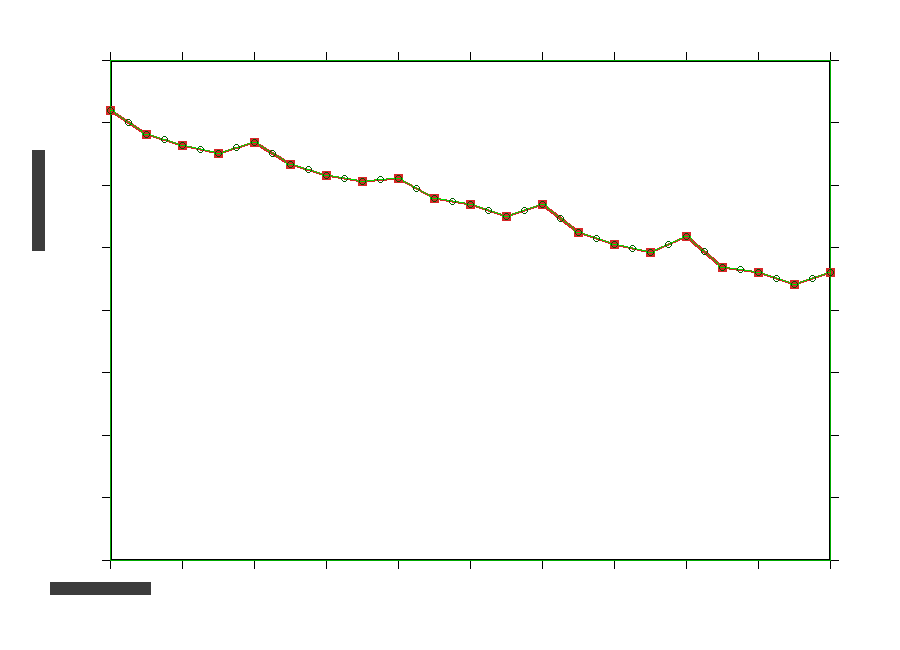

先看样例，再决定要不要花钱
说"能做什么"谁都会说。这一页把真跑出来的输出文件直接给你下载 —— 用 Excel 打开看、看它的列怎么排、表头在第几行、有没有多余的行。看完觉得行再谈。
下面每个样例都是先造一份刻意做脏的输入数据，再用交付给你的那个脚本跑一遍，产出的就是这份文件。 所以我不会拿"示意图"糊弄你 —— 你下载到的是脚本真实输出。
输入数据是我为测试专门造的（规模比真实项目小得多），所以数字本身没有意义，要看的是格式和结构： 表头在第几行、来源有没有留痕、脏值被怎么处理、有没有一份说明改了什么。
如果你手上的数据和我下面某个样例像，那基本可以直接套。 如果你看完还是不确定，把文件发我做一份免费的《数据体检报告》，那份报告更接近你的实际情况。
不用先付钱：先免费拿一份《数据体检报告》
把你的文件发我（脱敏也行），我先出一份报告：这份数据干不干净、能不能直接合并、有哪几列需要人工处理、自动化能省多少时间。 报告给你，不收钱，你可以拿去比价。如果数据量不大、手工做更快，我会直接告诉你不用买脚本。
五个样例，输入和输出都在
01多张表按编号合并汇总
几十张表表头不一样、列顺序不一样、还夹着坏文件，拼成一张总表，并给出一份《读取报告》说明哪些文件被跳过、为什么跳过。
输入：8 个文件，混了 .xlsx 和 .csv、列顺序打乱、表头带空格、金额写成 ¥1,234.00 文本、一个 GBK 编码的 csv（带全角数字）、一个有两个工作表的 xlsx、一个子文件夹里的文件、一个二进制垃圾 损坏.xlsx、一个空 csv。
输出：3 张表 —— 汇总（按编号分组，含合计行）/ 明细（每行带来源文件与来源工作表）/ 读取报告。表头统一在第 1 行，可以直接 pd.read_excel 读回。
02PDF 报表数据提取
试验机、光谱仪、三坐标、环境箱导出的报告全是 PDF，数据只能肉眼抄。按表格几何结构提取，没有框线的表格也能提 —— 这一条同行普遍做不到。
输入：3 页试验报告 PDF，第 1 页是 6 列有框线的表、第 2 页是 4 列完全无框线的表（仪器报告里最常见的那种）、第 3 页是 7 列表，外带一批「参数: 值」形式的元数据。
输出：数据表（前置 5 列溯源：来源文件 / 页 / 表序号 / 识别方式 / 行号）、参数表、提取报告。
03图片 / 曲线数据提取
论文插图、仪器截图里的曲线还原成数值，拿去重新拟合或做对比。交付时会附一张叠加核对图：把提取到的点画回原图上，准不准你自己一眼验证。
输入：一张 900×650 的折线图（坐标轴方框 + 刻度 + 曲线，21 个真值顶点）。
输出：逐像素提取的 721 个点（x / y / 像素坐标），以及下面这张叠加核对图 —— 绿线压在红线上，两侧露出红色边缘就说明逐像素重合。

叠加核对图（绿 = 提取结果，压在原曲线上）

04不规范数据清洗成规范表
全角数字、¥1,234.00、5 件、1.2万、五种日期写法、八种是/否写法、前后空白、整行全空、完全重复行、列名 Unnamed: 7 —— 一次性统一掉，并给出一份逐列说明改了什么的清洗报告。
输入：10 行 × 9 列，刻意做脏（就是上面那个「样例输入_脏数据表」）。
输出：清洗后 8 行 × 8 列 + 清洗报告（列名 / 处理动作 / 影响行数 / 说明）。数值列还会用 1.5×IQR 提示异常值，但只提示、不改数据 —— 离群不等于错误。
05实验数据批量出图
一组数据出十几张图还要统一格式，是最耗人的活。一次批量出 SVG（矢量，直接进论文）+ PNG（可带误差棒、线性拟合与 R²），同时生成一份带原生 Excel 图表对象的 xlsx 和一个能翻看的图库页。
输入：15 行 × 5 列的力学实验数据（GBK 编码的 csv，含分组列）。
输出：3 张分组图（每张 SVG + PNG）、图表.xlsx（图表是可在 Excel 里继续编辑的原生对象，不是贴图）、index.html 图库。不需要 matplotlib。
其中一张出图结果（带误差棒与线性拟合 R²）

这些样例能说明什么、不能说明什么
| 能说明 | 输出文件的结构：表头在哪一行、有没有溯源列、脏值被怎么处理、有没有配套说明文档、是不是能直接读回。这些是拿到手才知道的东西。 |
|---|---|
| 能说明 | 脚本确实处理过这些具体的脏情况（坏文件、GBK、无框线表、全角数字、合并单元格、纯黑曲线……），不是"理论上支持"。 |
| 不能说明 | 你的数据长什么样。真实项目里的麻烦永远在测试集之外 —— 所以才有那份免费的体检报告，先拿你的文件试。 |
| 不能说明 | 数字的对错。样例数据的数值是我为测试造的，没有物理意义。 |
下一步
想让我处理你的数据：把文件发我，先出一份免费的《数据体检报告》。 闲鱼搜「Excel数据处理 数据提取」，或搜用户名 tb40226286。
也可以先去 服务说明页 看七个能力和报价区间， 或者直接用 15 个免费在线计算器（不用注册、数据不出浏览器）。